Making Requests with Postman
Context: QA needing to validate a new process before the user interface was developed.
Purpose: Help team members configure Postman for our internal environment and make the required API calls.
Audience: Non-technical people without prior knowledge of API/Postman.
Prerequisites¶
- Postman has to be installed.
- The required servers must be running.
Importing the Collection¶
- In a web browser, open the URL
http://localhost:7111/swagger/. If the Manager Server is running on a different port, change the port in the URL. You should see the Swagger UI interface. If you don't, it means something is wrong with the server. -
Copy the address of the
swagger.jsonfile.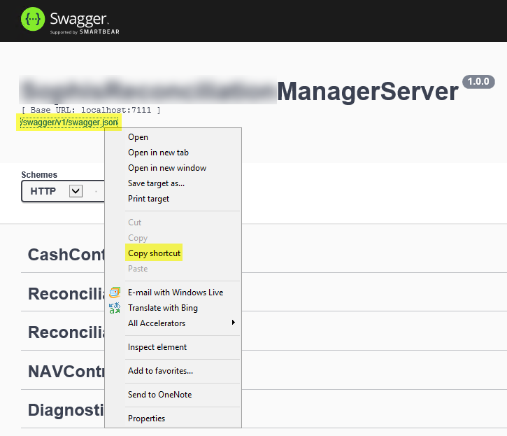
-
In Postman, click Import.
-
On the Import from Link tab, paste the link you copied, then click Import.
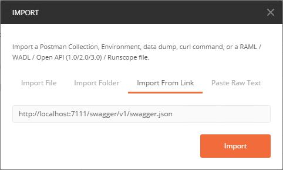
-
The collection is displayed on the left side of the Postman window.
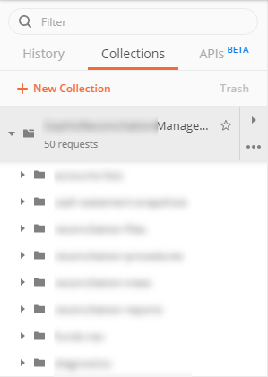
Obtaining an Authentication Token¶
Warning
Make sure that, in the Postman settings (File > Settings), SSL certificate verification is turned off.
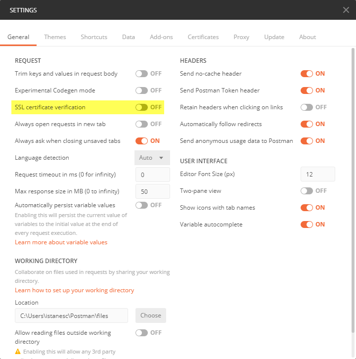
You can change the duration of the token from the Keycloak settings (https://localhost:8443).
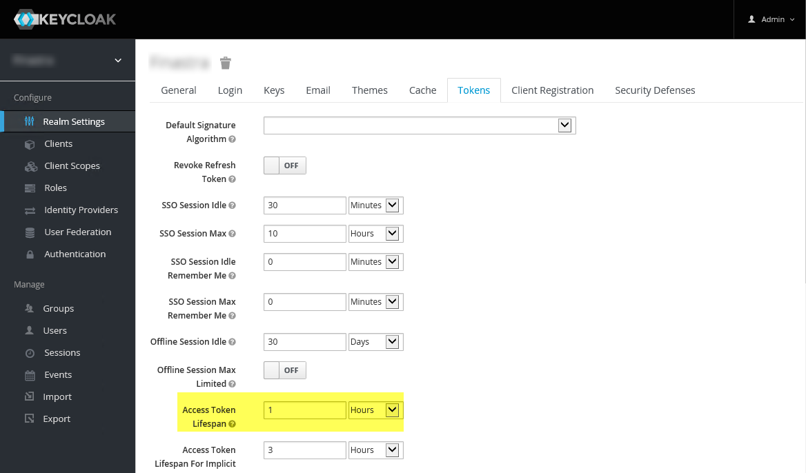
Authentication at Collection Level¶
You can set up authentication for the entire collection, so that you don't have to generate a token for each request.
-
Click ... next to the collection name and click Edit.
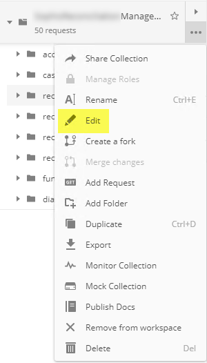
-
On the Authorization tab, set Type to OAuth 2.0 and Add auth data to to Request Headers.
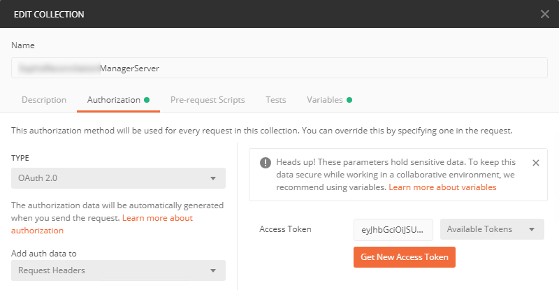
-
Click Get New Access Token.
-
Set the parameters as in the following screenshot. The Access Token URL has to be the address of the Keycloak server.
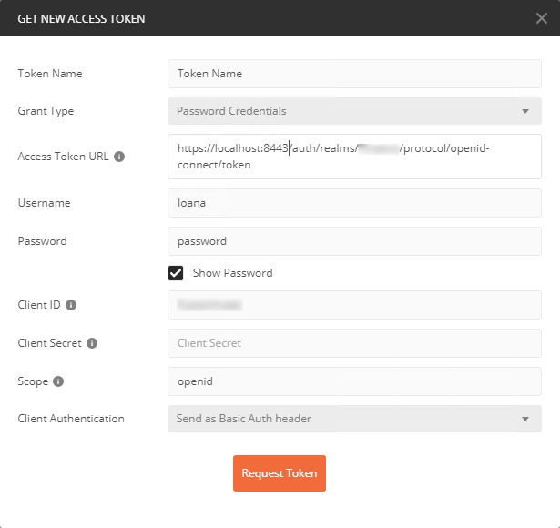
-
Click Request Token. The token is generated.
- Scroll down and click Use Token.
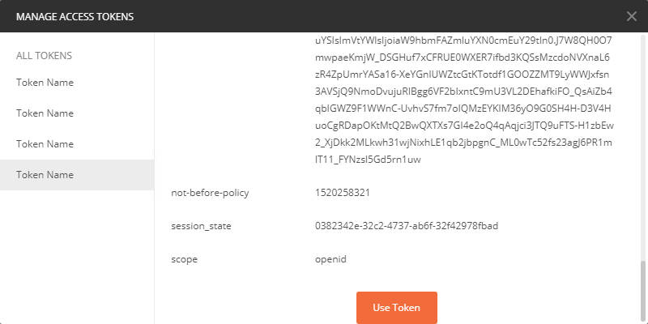
- You return to the Edit Collection window.
- Click Update to save the changes to the collection. Any request in this collection will now use this authentication token.
Authentication at Request Level¶
- In the main Postman area, click +. A new tab opens.
- Set the method to POST and enter the URL
https://localhost:8443/auth/realms/CompanyName/protocol/openid-connect/token(the address of the Keycloak server). - On the Body tab of the request, add the keys in the following screenshot and fill them in with your user name and password.
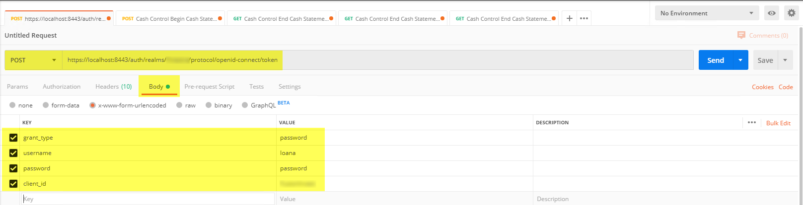
- Click Send. The bottom part is populated with the token data.
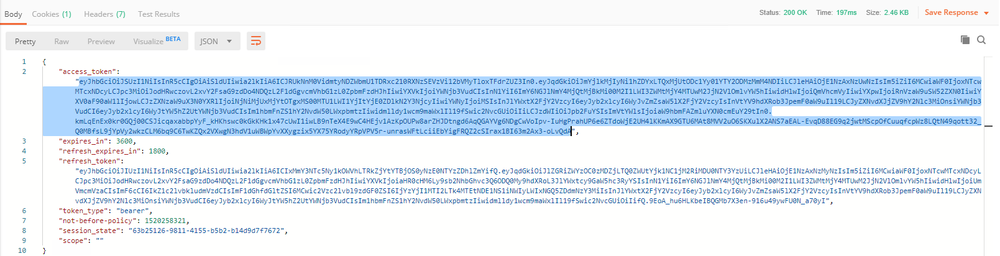
- Copy the contents of the access_token node.
- To use the token, open any request that requires authorization.
- On the Authorization tab, set Type to Bearer Token and click the Token field. The field is expanded. Paste the token value you copied earlier.
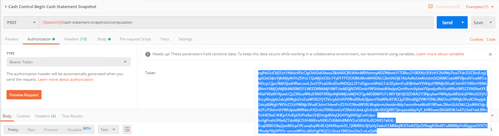
You can now make the request.
Running a Snapshot¶
- Expand the collection and then expand snapshots > computation.
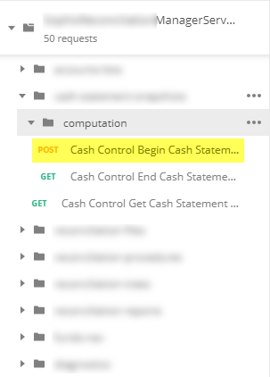
- Next to POST - Cash Control Begin Cash Statement Snapshot, click ... and select Open in New Tab. A new tab is displayed.
- On the Authorization tab, set Type to Oauth 2.0.
- On the Body tab, fill in the details of the request:
StartDateis the end date of the snapshot.ProcedureIdis the ID your procedure has in the database.Modeshould beFull.AccountListsshould contain the IDs of the accounts.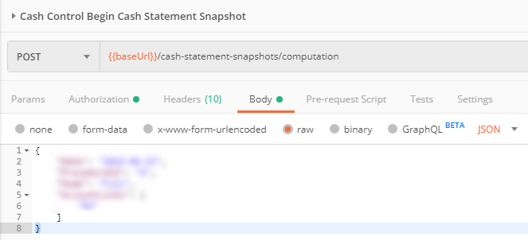
- Click Send. The request is sent and its ID is displayed in the bottom part.
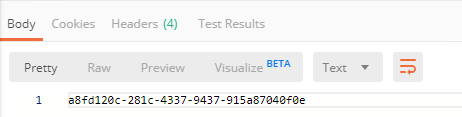
- Copy the ID to use it in the next procedure.
Checking the Status of the Snapshot¶
- Expand the collection and then expand snapshots > computation.
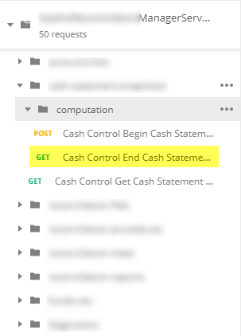
- Next to Get - Cash Control End Cash Statement Snapshot, click ... and select Open in New Tab. A new tab is displayed.
- On the Params tab, in the Path Variables section, in the
idparameter, paste the ID you copied in the previous procedure.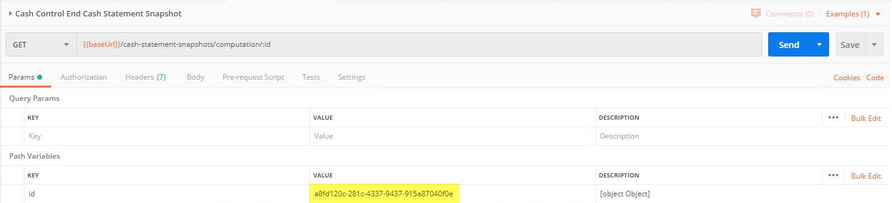
- Click Send.
- If the 204 No Content status is returned, it means that the snapshot is still running.
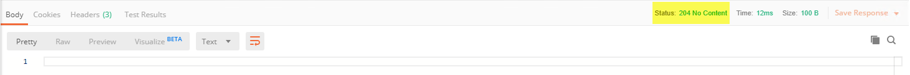
- If the 200 OK status is returned and the request body is populated, it means that the snapshot has finished successfully.
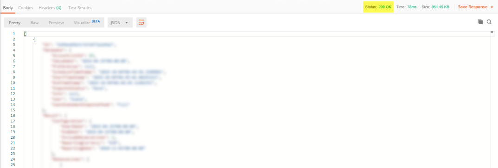
- If the 204 No Content status is returned, it means that the snapshot is still running.